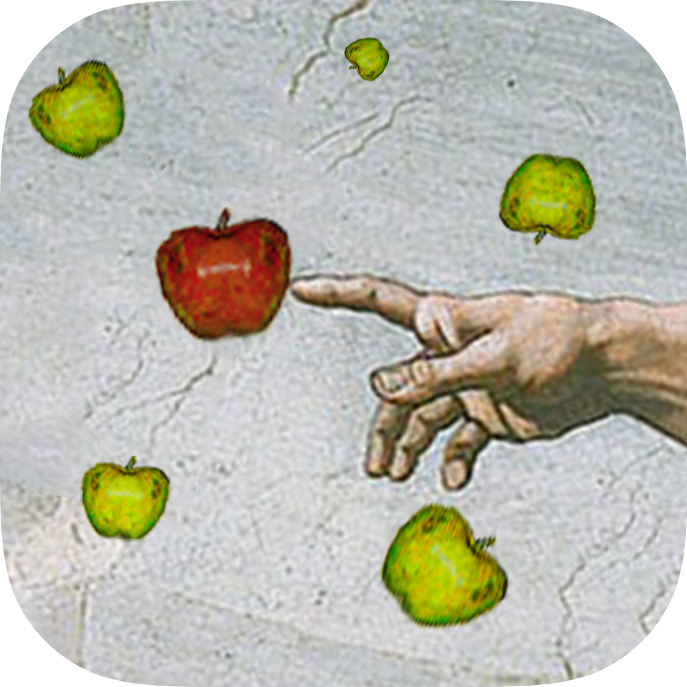

About Me
I am a fourth year computing science student currently attending the University of Alberta. I will be graduating in the spring. I first became interested in pursuing computing science after attending a University of Alberta summer camp about building video games. After the camp, I looked for ways that I could further experiment with coding. I did so by programming games on my scientific calculator in math class and later on, teaching myself the basics of iOS app implementation. I published two apps on the iOS app store while I was in high school.
My History

While attending the University of Alberta, I have been employed part-time as both a research assistant and teaching assistant. These positions included building a Minecraft plugin to allow users to write and execute simple Python code using blocks (all from within Minecraft), and writing code to search and catalogue occurrences of computing science in the K-12 programs of study across Canada.
What I Have to Offer

I am very experienced in developing iOS apps using Xcode and Swift (or Objective-C). I also have a good amount of experience with Python and Java. I am a very hard-worker and very determined. I keep working on a problem until I have found a solution, and then I always try to find a way to improve upon that solution.